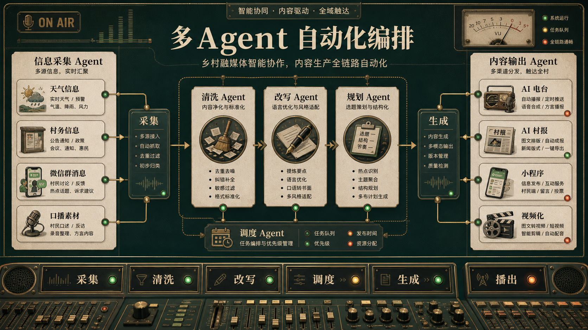
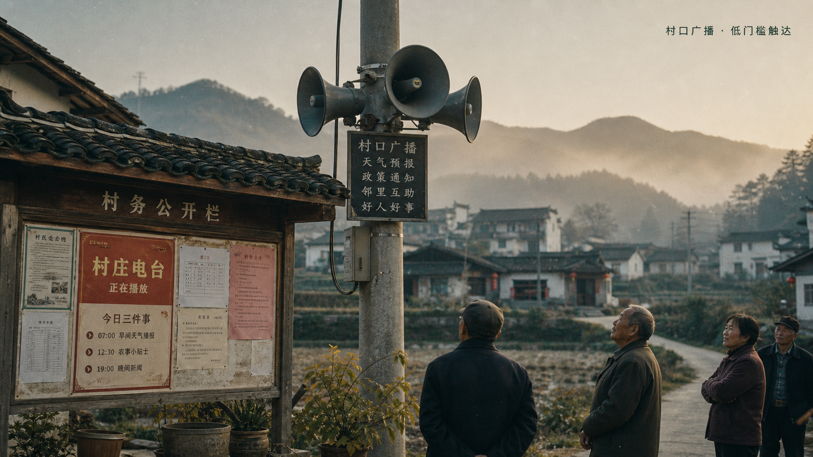
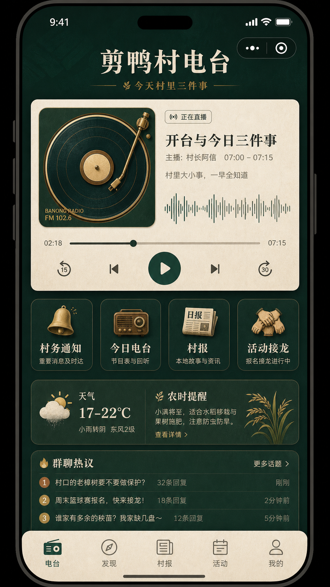
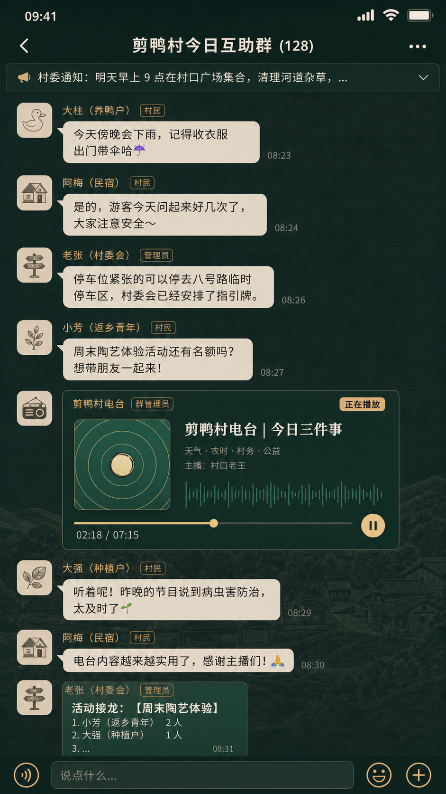
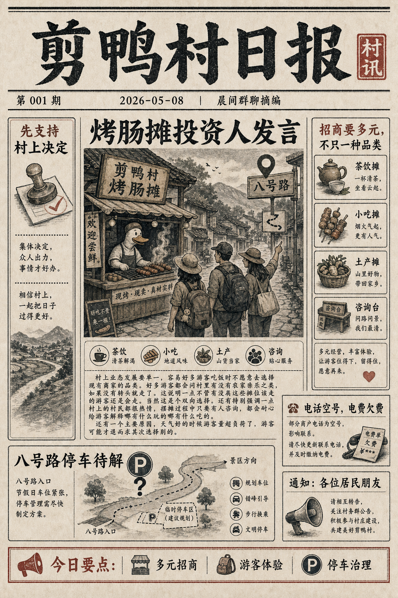
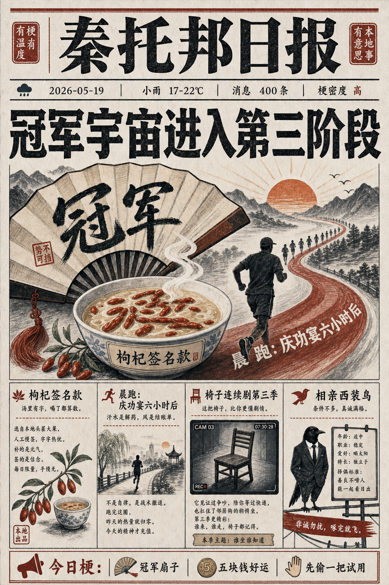
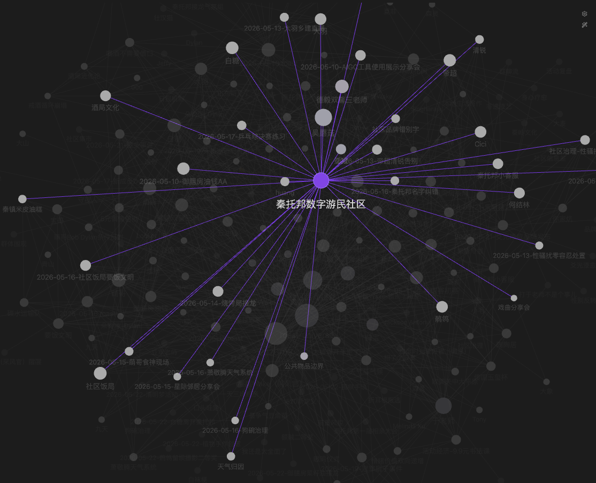
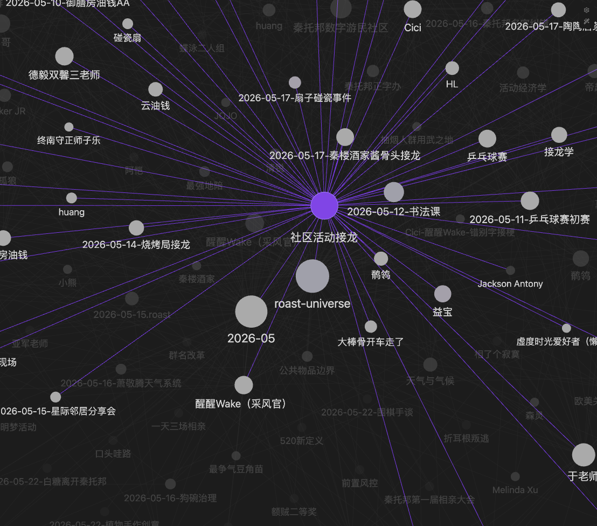
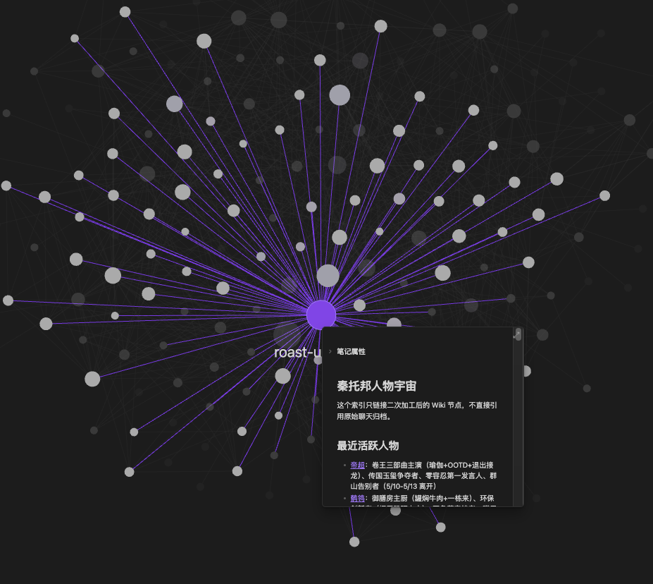

政务 API、天气农时、微信群聊、村书记口播，先变成可处理的村庄信号。
Jianya media / pitch opening
奶奶屋里的那台收音机，很多年都没有关过
阿恺小时候住在村里。奶奶屋里有一台旧收音机，不是什么好机器， 但从早到晚一直亮着。她有时听秦腔，有时听天气预报，有时什么都不听， 只是让那个沙沙的声音陪着自己。
FM 10:26
从一段熟悉的声音开始，把评委带进村庄现场：左边是人和记忆，右边是正在播出的村庄频道。
Jianya village signal
live / fallback ready
Now tuning
今日三件事
天气、农时、村务提醒
老人不用打开手机
新村民与原住民的共同频道
把信息写成人话
深夜群聊日常
把争执化成可被听见的日常
Core problem
乡村真正缺的不是更多信息
当城市化与局部逆城市化同时发生，村庄需要一个让不同人群重新听见彼此的共同媒介。 声音不是陪衬，而是老人、新村民、离乡年轻人和村庄治理之间仍然能共用的接口。
-
01新村民与原住民住在一起，却没有共同频道数字游民、新村民与在地村民之间，缺少稳定且低门槛的融合入口。
-
02异乡人与家乡之间，只剩一句“都好”外出务工的年轻人知道故乡还在，却很难持续感知它每天的变化。
-
03信息在线上，老人在线下微信群与小程序越发重要，但老人常被数字门槛挡在信息网络之外。
-
04冲突在群里放大，却少了柔性化解群聊争执、邻里纠纷需要被疏导，而不是被二次传播和持续激化。
Resolution
以多环节 AI 编排为核心的乡村融媒体平台
从老人收音机、村口广播、群聊家常这些最原生的乡村场景出发， 把碎片化信息编织成一个 24 小时有人情味的乡村电台。
- 已经实现：AI 电台，验证“低门槛触达 + 日常陪伴”的核心场景。
- 已经产出：AI 村报样张，把声音内容沉淀为适合传播和回看的图文载体。
- 后续方向：视频化，让村庄故事进入短视频和公共屏幕场景。
Design logic
四层 Agent，各自解决一种“听见彼此”的难题
不是把 AI 功能堆成列表，而是把村庄信息从采集、改写、生成到播出连成一条可验证的广播工作流。
通知、故事、闲聊分风格改写，让严肃信息与日常叙事自然衔接。
本地 AI 音乐生成 + TTS，自适应匹配紧急、温情、日常等内容氛围。
旁链压缩、音乐闪避、台呼和转场统一调度，形成广播级听感。
24 小时有人情味的乡村电台
Audio demo
请观众把注意力让给声音本身
电台 Demo 不需要被包装成炫技界面。现场重点听三件事：信息是否自然， 音乐情绪是否跟内容变化，播报和背景音是否具有专业电台感。
- 输入：新老村民群聊碎片、村两委通知、村庄故事。
- 输出：连续播出的村庄声音，既服务治理，也经营情感连接。
- 边界：fallback 优先，真实源接口保留但不默认接入。
Evidence board
把路演叙事落到可播放素材
叙事不是抽象怀旧。本页用真实音频与界面视频承接每一个论点， 让评委可以现场验证“乡村电台感”是否成立。
Opening
旧收音机与秦腔记忆，对应《秦托邦播客测试 · 电台版》。
Idea to product
两条音频样本覆盖戏曲电台口味和群聊日常口味。
Fractures
《深夜电台之群聊日常》对应“信息在线上、老人在线下”的问题面。
Resolution
15 秒界面视频把 AI 电台、村报样张和视频化方向变成可见交互。
Agent layers
三段素材分别落在生成层、调度层、播出层。
Audio demo
64 秒电台版与 150 秒群聊日常，可验证播报、音乐和电台质感。
Vision
早晚陪伴、离乡连接、新村民理解和柔性治理，形成闭环证据。
Interface video
九鸭村电台交互样片Radio sample A
秦托邦播客测试 · 电台版戏曲/电台语气样本，承接开场的旧收音机和老人听觉入口。
Radio sample B
深夜电台之群聊日常群聊碎片被改写成夜间陪伴内容，承接问题页与 Demo 页的自然度验证。
Source evidence
电台不是凭空生成，它从村庄真实信号里组织节目
这页用演示图说明两类来源：一类是系统内部的多环节自动化编排， 一类是村口大喇叭这类最传统、也最容易触达老人的公共入口。
- 多 Agent 图用于解释“采集、清洗、改写、调度、播出”的处理链条。
- 村口大喇叭图用于解释为什么电台适合乡村：它能回到老人熟悉的听觉场景。
- 图片为演示说明图，不代表已接入全部真实数据源；正式落地仍遵循 fallback 优先和人工审核。


Access channels
同一条电台内容，可以进入小程序，也可以进入微信群
后续产品不会只停留在网页 Demo。小程序承担节目回听、村报和活动入口； 微信群里的播放卡片则展示了“村民正在讨论的地方，就是电台可以抵达的地方”。
- 小程序图是后续入口样张：今日电台、村报、活动接龙、天气农时集中在同一界面。
- 微信群图是群内播放样张：电台卡片可以嵌入日常聊天，让信息跟随真实讨论流动。
- 这两张图用于说明触达方式，不作为当前已上线小程序或真实群聊截图。


Visual output
声音之外，村庄还需要能被转发和张贴的图文出口
电台负责“正在发生”，村报负责“留下来”。这些样张展示的是同一套信息流在图文端的可能形态： 既可以服务村务通知，也可以包装在地商业、活动和社区记忆。
- 《剪鸭村日报》偏公共事务与在地商业，适合张贴在村口、游客中心和民宿前台。
- 《秦托邦日报》偏社区运营与活动传播，适合承接数字游民社区和活动报名。
- 图像是视觉样张，用来说明 AI 村报的呈现方向；正式落地时仍以真实采集信息和人工审核为准。



Source intelligence
关系图谱解释电台从哪里“听见”村庄
如果电台只会念稿，它很快会变成另一个通知栏。关系图谱让系统知道哪些人、活动和话题正在形成连接， 再把这些连接转成广播、村报和后续视频素材。


From demo to on-air
这不只是一个比赛型项目
它同时也是我们正在尝试、正在探索的方向：未来形成一个真正 24 小时带状节目的电台， 以及围绕村庄日常持续生长的融媒体项目。
用 AI 把村庄里的碎片信息，整理成可以被听见、被理解的日常节目。
从电台延展到村报、视频与公共屏幕，形成连续的乡村融媒体网络。
让声音服务治理、陪伴老人、连接离乡的人，也让新村民更自然地进入村庄。
先听见，再抵达
希望老师们喜欢。也希望在三个月内，能够让这个电台真正落地。